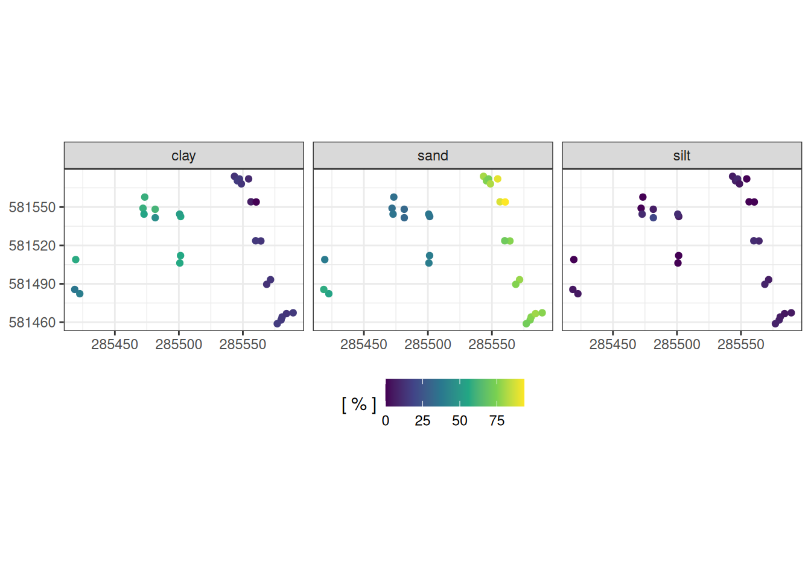

Code
alt <- read_csv("data/raw_data/inventory/ALT_Paracou9ha_20250129_cleancord.csv") %>%
select(IdTree, Xutm, Yutm) %>%
rename(id = IdTree, x = Xutm, y = Yutm)
soil <- read_csv("data/raw_data/pedo/Labo_data_binded.csv") %>%
mutate(clay = `Argiles %`) %>%
mutate(sand = `Sables fins %` + `Sables grossiers %`) %>%
mutate(silt = `Limons fins %` + `Limons grossiers %`) %>%
select(`Sample ID`, clay, sand, silt,
TreeNum1, TreeNum2, TreeNum3, DTree1, DTree2, DTree3) %>%
rename(soil_id = `Sample ID`,
id_1 = TreeNum1, id_2 = TreeNum2, id_3 = TreeNum3,
d_1 = DTree1, d_2 = DTree2, d_3 = DTree3) %>%
filter(!is.na(clay)) %>%
mutate(d_1 = ifelse(!is.na(id_1) & is.na(d_1), 0, d_1)) %>%
mutate(id_d__1 = paste(id_1, d_1),
id_d__2 = paste(id_2, d_2),
id_d__3 = paste(id_3, d_3)) %>%
select(soil_id, clay, sand, silt, id_d__1, id_d__2, id_d__3) %>%
gather(variable, value, -soil_id, -clay, -sand, -silt) %>%
separate(value, c("id", "d"), convert = TRUE) %>%
separate(variable, c("id_d", "measure"), "__", convert = TRUE) %>%
arrange(soil_id, measure) %>%
select(-id_d) %>%
mutate(id = ifelse(
str_length(id) == 6,
paste0(str_sub(id, 1,2), "_", str_sub(id, 3,6)),
id
)) %>%
na.omit() %>%
left_join(alt) %>%
na.omit() %>%
group_by(soil_id, clay, sand, silt) %>%
filter(n() >= 1) %>%
do(center = paste(nlm(function(x){
sqrt(sum((x[1]-.$x)^2+(x[2]-.$y)^2))-sum(.$d)
}, c(mean(.$x), mean(.$y)))$estimate, collapse = ";")) %>%
unnest(center) %>%
separate(center, c("x", "y"), sep = ";", convert = TRUE) %>%
ungroup() %>%
gather(variable, value, -soil_id, -x, -y)
ggplot(soil, aes(x, y, col = value)) +
geom_point() +
facet_wrap(~ variable) +
coord_equal() +
theme_bw() +
scale_color_viridis_c("[ % ]") +
theme(axis.title = element_blank(),
legend.position = "bottom")